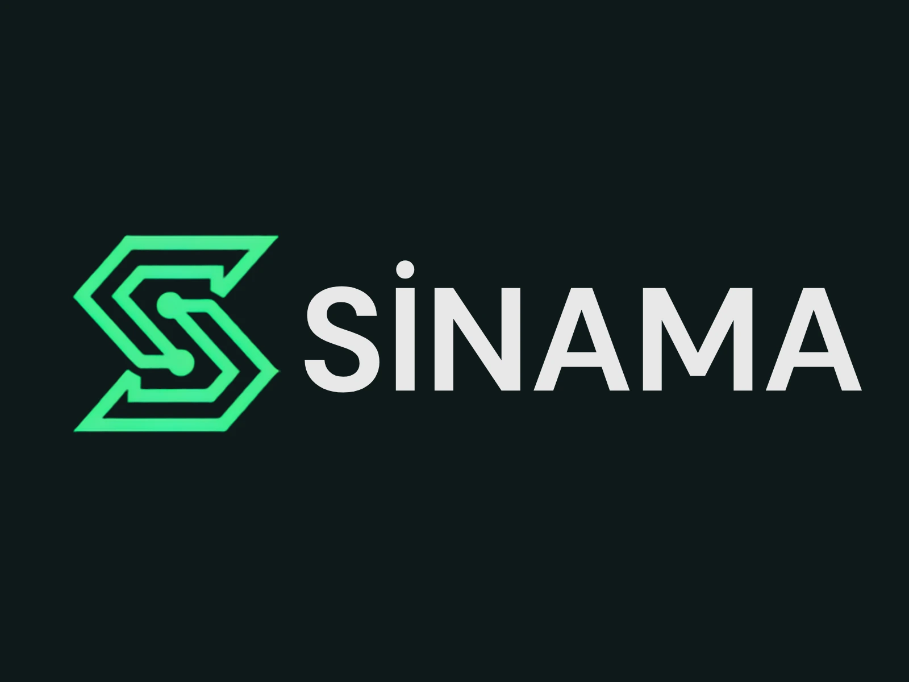

AI Designer & Software Developer
I design AI workflows and build reliable, testable software products.
My work connects conversational AI, agent reliability, solution engineering, LLM evaluation, workflow automation and product development. I focus on systems that can be tested, explained and improved — not just demos that look good once.
AI Agent ReliabilityConversational AISolution EngineeringLLM EvaluationWorkflow AutomationFastAPITypeScriptPhaser

50+Academic, personal, freelance & team projects
25+Certificates
What I do
From AI workflows to working software.
I combine software logic, automation thinking and practical AI experience to design systems that are clear, usable and maintainable.
AI Agent Reliability & Evaluation
Multi-turn scenarios, deterministic workflow checks, regression evidence, release-readiness logic and advisory semantic evaluation.
Conversational AI & Flow Design
Chatbot flows, intent and response logic, QA, fallback paths, IVR and multi-channel interaction design.
Software Development
Python/FastAPI services, TypeScript interfaces, C#/.NET systems, APIs, persistence and product-focused frontend work.
Interactive Product & Game Development
Responsive browser games, gameplay state, progression systems, input design, platform adapters and product iteration.
Tech stack matrix
Tools I use across AI, backend, product and games.
A quick matrix showing how technologies fit into real project work rather than a flat keyword list.
AI Reliability & Agent Systems
Scenario design, agent adapters, deterministic evaluation, regression comparison, semantic shadow evaluation and release evidence.
Software & Backend
Automation systems, APIs, database-backed applications and maintainable backend logic.
Web & Product
Responsive products, customer journeys, dashboards, forms and user-facing application flows.
Games & Interactive Systems
Gameplay architecture, progression, responsive UI, platform lifecycle and browser-based interactive experiences.
Currently building
Two flagship products are shaping my current direction.
One focuses on reliable AI systems; the other on product-minded game engineering. Both are being iterated with tests, architecture and real product constraints.
SINAMA — AI Agent Reliability Lab
Live reliability product with insurance + e-commerce collections, regression comparison, version trends, release readiness and external agent testing. Current focus: calibration and stabilization.
Merge Rush: Tiny Factory
Phaser 3 + TypeScript merge game with timed orders, factory restoration, staged board unlocks, multi-cell pieces and a YouTube Playables-oriented platform architecture.
Joyday data & reservation analysis
Planning dashboards around reservation data, package demand, customer flow and operational tracking.
AI workflow demo
See how I think through chatbot flow logic.
Select a scenario and the page will generate a simple AI flow map. This lightweight demo shows how I structure intents, steps and user journeys.
Algorithmic 3D lab
Drag the model and see code turn math into motion.
A lightweight canvas demo built with vanilla JavaScript. The shape is generated from a triangular parametric mesh and rendered with perspective projection, depth sorting and mouse-controlled rotation.
Drag to rotate • Scroll to zoom
Vanilla JS
Triangular surface generated by an algorithm.
The mesh is calculated with barycentric coordinates, animated through a wave function and projected onto the canvas without any external 3D library.
Recent experience
AI, automation and product-focused work.
My recent work is centered around AI-powered chatbot systems, LLM evaluation, automation flows and real business products.
See ExperienceAtölye Joyday – Co-Founder & Digital Product Developer
Building the studio’s website, reservation journey, automation workflows and digital product experience.
CBOT – AI Designer
Contributed to enterprise chatbot QA, flow restructuring, multi-channel automation and an insurance claims intake POC.
Outlier AI – AI Training Specialist
Evaluated LLM responses, reasoning, code and multimodal outputs through structured quality-assessment tasks.
Featured AI case study
SINAMA — AI Agent Reliability Lab
A Turkish-first reliability platform that runs repeatable multi-turn scenarios, captures tool traces, evaluates workflow contracts, compares agent versions and turns the evidence into release-readiness decisions.
Featured works
Two flagship builds, supported by a broader product portfolio.
SINAMA demonstrates AI reliability engineering; Merge Rush demonstrates interactive product and game-system engineering. The rest of the catalog shows the breadth behind those directions.

SINAMA — AI Agent Reliability Lab
Live AI reliability product with deterministic workflow evaluation, baseline/regression comparison, version trends, external agent testing and release-readiness evidence.

Merge Rush: Tiny Factory
Active-development merge game connecting timed orders, factory restoration, board-space pressure, progression and platform-ready game architecture.
View Case Study
AI Flow Puzzle
A live n8n-inspired browser game demonstrating chatbot flow structure, fallback logic, validation and user journey thinking.

Atölye Joyday Official Website
A live digital product combining package-based reservation journeys, automated notifications and operational workflows.

Hospital Form App
A database-backed C# Windows Forms project demonstrating patient, doctor, secretary and appointment workflows.
More experiments on GitHub
Additional learning projects and archived builds.
The main catalog highlights selected projects, while GitHub includes more university work, prototypes and experiments.
Contact hub
Let’s talk about AI systems, solution engineering or software products.
I am especially interested in Applied AI, AI Solutions, Forward Deployed / Solution Engineering, Conversational AI and product-minded software roles.